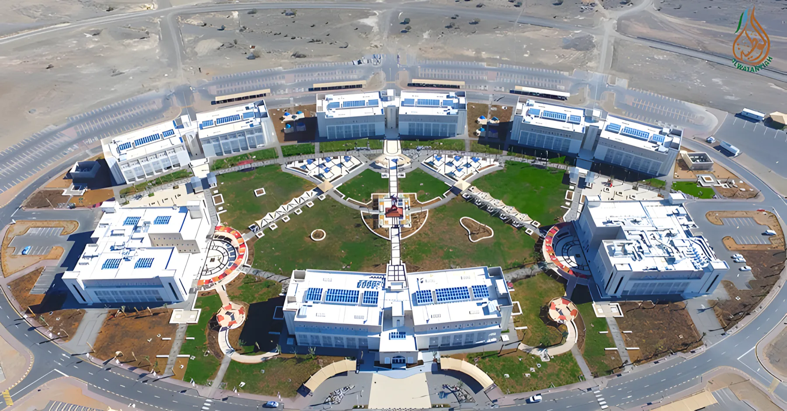
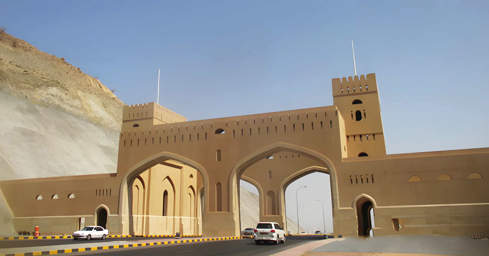
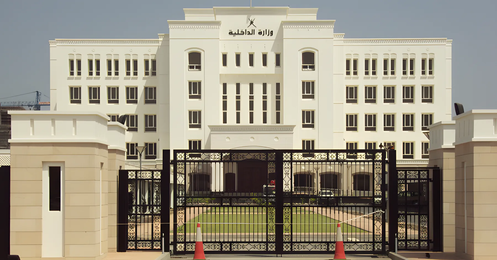
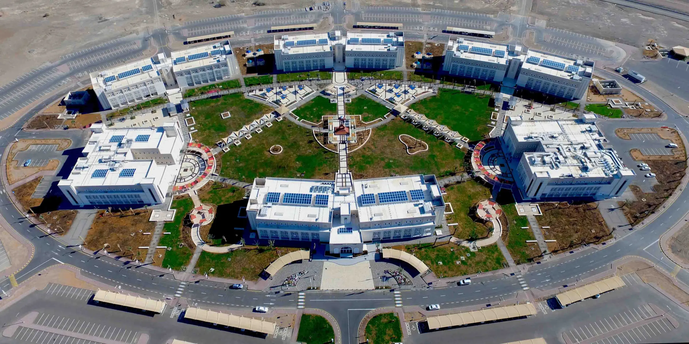
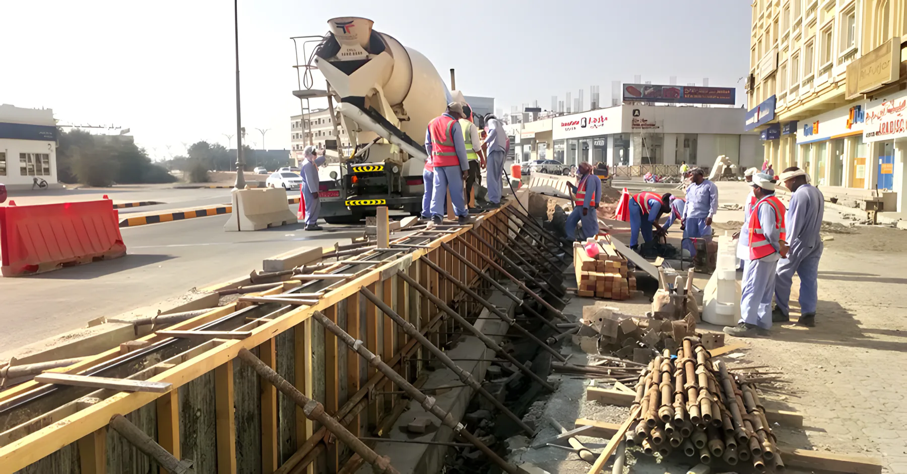
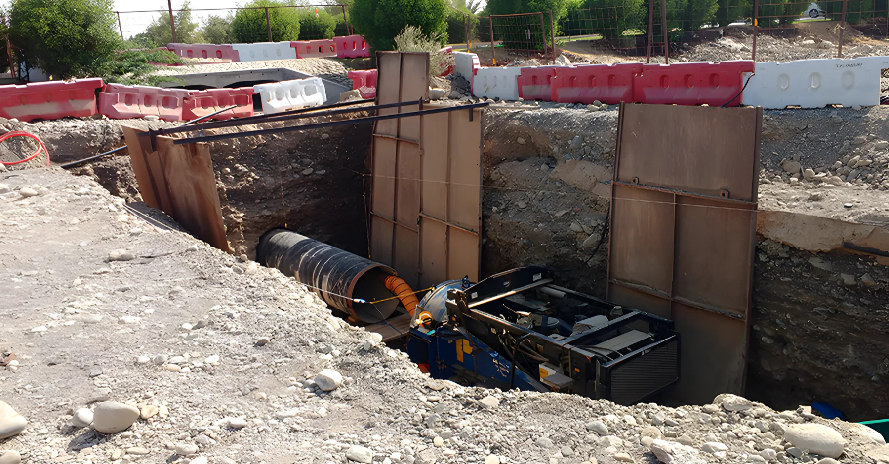
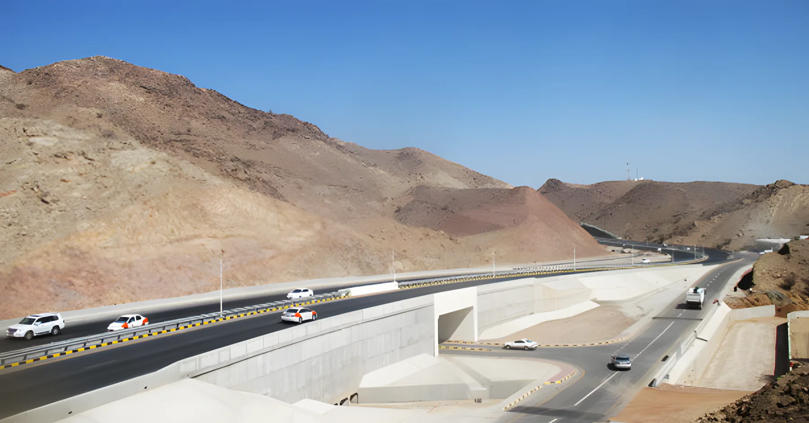

Al Watanyiah United Engineering & Contracting
Roads, bridges, buildings, water, sewerage and power works across Oman. An Omani contractor since 1992, formerly NUEC.
الشركة الوطنية المتحدة للهندسة والمقاولات

Projects
A selection from the register: who it was for, where, and the contract value. Roads, campuses, ministries, and hundreds of kilometres of pipe.
| Photo | No. | Project | Location | Client | Contract value |
|---|---|---|---|---|---|
 | 01 | Upgrading of Sohar RoundaboutInterchange in place of the old roundabout; about 4 km of Batinah Highway widened from four to six lanes, with pedestrian underpasses and overpasses, taxi stands and bus bays. | Sohar | Ministry of Transport & Communications | OMR20,948,376 |
 | 02 | Asphalt Road to Wadi Al Sahtan31 km of road with links to Umq, Al Farrah, Fasah and Old Tabaqah villages: 94 culverts, a 7.5 km retaining wall and 2 bridges. DOSSIER award, Best Infrastructure Project 2018. | Rustaq | Ministry of Transport & Communications | OMR31,990,898 |
 | 03 | Mobella Wastewater Project458 km of gravity sewer (231 km main line, 227 km riders and house connections) with 10,171 house connection chambers. | Mobella, Muscat | Haya Water | OMR58,531,567 |
 | 04 | A'Sharqiyah UniversityAdministration block, colleges, library, student centre, engineering labs, central chiller plant and STP yards: 135,000 m² built-up. | Ibra | A'Sharqiyah University | OMR23,000,000 |
 | 05 | Water Supply System for HaymaWater from the Duqm reservoir to Haima: 276 km of pipe incl. 68 km of network at Haima and Al Ajaiz, three ground reservoirs, two elevated tanks, four pumping stations. | Al Wusta | Public Authority for Electricity & Water | OMR24,487,145 |
 | 06 | Dualization of Al Rustaq Escarpment Road12 km dual carriageway with 30 km of asphalt service road, two signalised junctions, pedestrian and vehicle underpasses, street lights, shotcreting and a gateway building. | Rustaq | Ministry of Transport & Communications | OMR27,706,329 |
 | 07 | Headquarters building, Ministry of InteriorGround + 4 floors, 12,955 m² of offices. | Al Khuwair, Muscat | Ministry of Interior | OMR3,692,694 |
 | 08 | Sewerage Network and STP, Barka87 km gravity mains, 15 km pressure line, 120 km of house connections, three pumping stations and a 6,000 m³/day treatment plant with SCADA. | Barka | Ministry of Regional Municipalities & Water Resources | OMR11,900,000 |
 | 09 | 132/33 kV Yanqul Grid Station & Ibri Regional BuildingDesign and construction of the 132 kV GIS grid station at Yanqul with 2×125 MVA transformers, and the Ibri regional office building. | Yanqul & Ibri | OETC | — |

135,000 m² of campus, built by one contractor.
Administration block, College of Commerce & Humanities, College of Applied Science, library, student centre, engineering labs and the central chiller plant.
Eight divisions, one company
General construction and EPC under one roof, with our own plant, design section and workshops. Open a division to see what it covers.
01Roads & BridgesMore than 600 km of roads built across the Sultanate.
- Roads, highways and highway structures
- Interchanges, flyovers and bridges
- Culverts, retaining walls and guard rails
- Dualization and widening of roads
- Our own road design section
02BuildingsUniversities, ministries, hospitals, offices and villa compounds.
- Government offices and ministries
- Colleges, schools and universities
- Hospitals and health centres
- Commercial, residential and high-rise buildings
- Steel structures, warehouses and factories
- Mosques, showrooms and project camps
03Water Supply NetworksPipelines, reservoirs and pumping stations; PAEW registered up to 600 mm.
- Water supply pipelines
- Ground reservoirs and elevated tanks
- Pumping stations
- Water treatment plants
- Water-retaining structures
04Sewerage Networks & STPGravity sewers, pumping stations, force mains and treatment plants.
- Gravity sewer networks and house connections
- Sewage treatment plants
- Pumping stations and force mains
- Treated effluent lines
- Washout and air release chambers
05Power Transmission & DistributionEPC for 132 / 33 / 11 kV substations, HV cables and lines.
- 132 kV, 33 kV and 11 kV substations (EPC)
- HV underground cables
- HT overhead and transmission lines
- RMUs and switchgear
- Street lighting
06MEP WorksElectrical, plumbing, air-conditioning and lighting for buildings and sites.
- Building electrification and power installation
- Plumbing and sanitation
- Air-conditioning
- Industrial and domestic lighting
- Erection of electrical and mechanical equipment

07Aluminium & GlazingAluminium doors and windows, glass work, kitchen units and counters.
- Aluminium doors and windows
- Glass work
- Kitchen units
- Counters

08Joinery & CarpentryOur own 1,000 m² workshop with a 1,500 m² yard, at the main office.
- All types of carpentry and joinery
- Interior decoration works
- 1,000 m² workshop
- 1,500 m² separate yard

600km
of road built across the Sultanate, much of it over hills, wadis and steep mountains.
926
plant, equipment and vehicles in our fleet, kept running by a base workshop in Muscat and workshops on each project.
458km
of gravity sewer on a single job: the Mobella wastewater project for Haya Water.
On site
Our crews and plant at work. Swipe or scroll sideways for more.





Who we build for
Ministries and government bodies, utilities and private companies, plus villa projects and residential complexes.
- Quality
- ISO 9001:2015 certified
- Safety
- HSE-MS certificate, OPAL
- Award
- DOSSIER Construction Award, Best Infrastructure Project 2018, Wadi Al Sahtan Road
- Registered
- PAEW (pipes to 600 mm), OETC, DCRP Grade A, RCA
- Diwan of Royal Court
- Ministry of Defence
- Royal Oman Police
- Ministry of Interior
- Ministry of Health
- Ministry of Education
- Ministry of Transport & Communications
- Supreme Committee for Town Planning
- Ministry of Regional Municipalities
- Islamic Affairs & Waqaf
- Public Authority for Electricity & Water
- Internal Security Service
- Haya Water (Oman Wastewater Services)
- BP, Sohar Aluminium, Bechtel, OCTAL, GS E&C
Talk to us
Head office and base workshop, Muscat
P.O. Box 2053, Postal Code 111, Central Post Office, Sultanate of Oman
Tenders, general enquiries, vendor registration and careers: call the office or email us.
- Telephone
- +968 2450 2581 / 82 / 83
- Fax
- +968 2450 2532